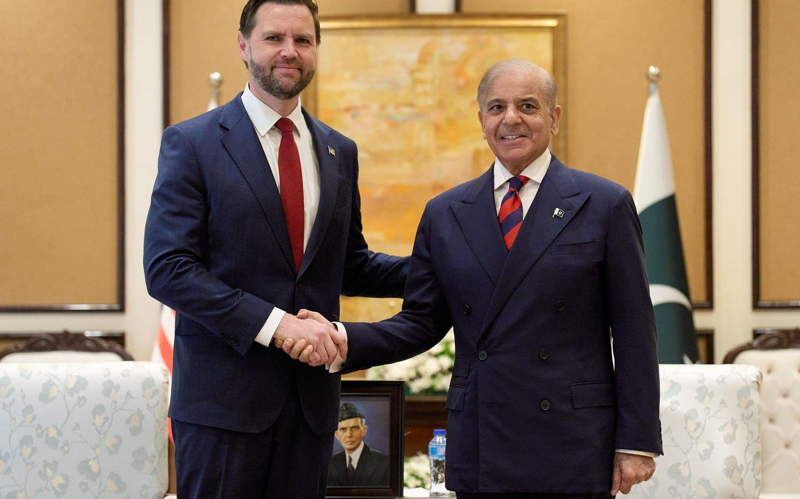

Relationen Pakistan & Afghanistan 2026
Under 2026 har fokus i regionen skiftat mot att bygga långsiktig stabilitet genom ekonomiska korridorer och förbättrad gränssäkerhet. Efter år av spänningar har länderna nu inlett en serie samtal för att underlätta handel och rörelsefrihet för civilbefolkningen.
Ekonomiskt samarbete och infrastruktur
Ett centralt tema i årets förhandlingar är byggandet av nya handelsvägar som ska binda samman Centralasien med södra Asien via Pakistan. Detta förväntas minska arbetslösheten och skapa nya möjligheter för unga i båda länderna.
Säkerhet och humanitära frågor
Trots de diplomatiska framstegen kvarstår utmaningar gällande säkerheten längs gränsområdena. Internationella hjälporganisationer samarbetar nu med lokala myndigheter för att säkra matleveranser och sjukvård till de mest utsatta regionerna, vilket ses som en förutsättning för en varaktig fred.